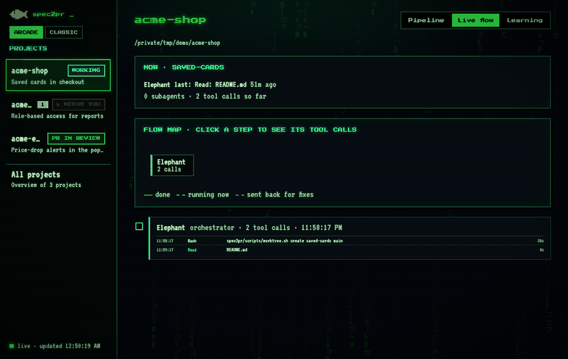
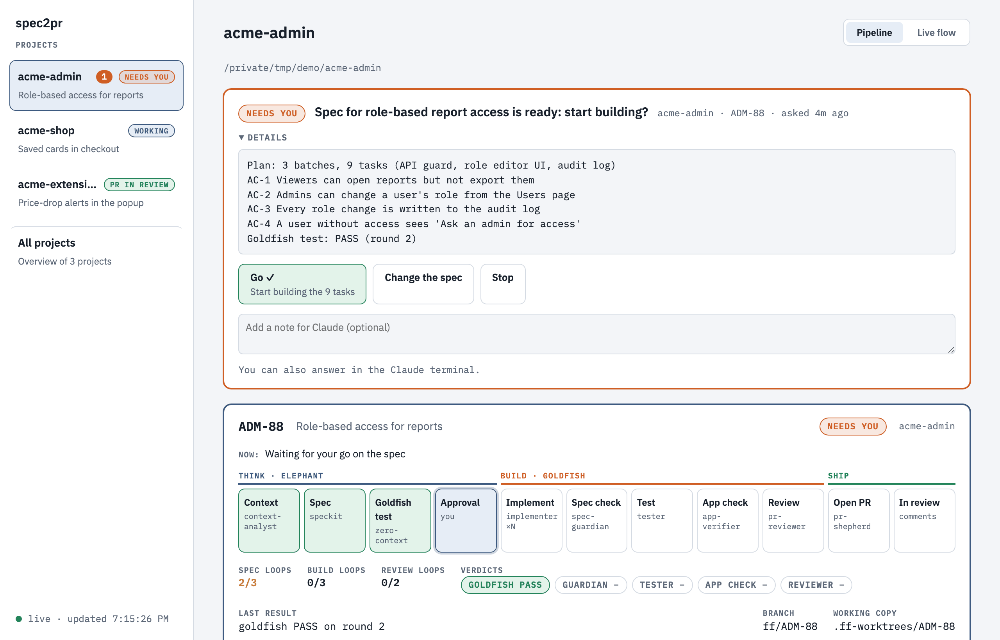

Give Claude Code a ticket.
Get back a reviewed, tested pull request.
spec2pr writes the spec, checks it's clear enough to build from, builds the feature with a team of agents, tests it, tries it in your real app, reviews it and opens the PR, asking you whenever a decision is yours. You watch every step live.
claude plugin marketplace add paulpriyam/spec2prclaude plugin install spec2pr@spec2pr
One elephant. Many goldfish.
AI agents are fast, but on real features they drift: they guess when the requirements are vague, mark their own homework, and forget decisions made an hour ago. spec2pr is built on three rules that stop that.
One agent remembers everything
The elephant talks to you, writes the spec and records every decision in it. It never writes code itself, so it never loses the big picture.
Every other agent starts fresh
Goldfish get only the spec and the files they need. If a goldfish can't build from the spec alone, the spec gets fixed before a single line of code is written.
Nobody checks their own work
The code is checked against the spec, tested, tried in the running app and reviewed, each time by an agent that never saw how it was written.
From ticket to pull request
Type /ship-feature PROJ-123 (or a GitHub issue, or just an idea) and spec2pr
takes it from there.
- UnderstandReads the ticket, linked docs and designs. Asks you about anything unclear.
- SpecWrites the spec and plan, then tests it on a goldfish until it's buildable from the spec alone.
- You approveA card on your dashboard shows the plan. Press Go, or ask for changes.
- BuildAgents build in parallel, each in the feature's own copy of your repo.
- CheckThe code is compared with the spec, line by line, by a fresh agent.
- TestA test is written and run for every acceptance criterion.
- Try itAn agent opens the real app and checks each criterion like a user, with screenshots.
- Review & PRAn independent review, then the pull request. Merging stays your call.
Anything that fails goes back to the builders, with a cap on retries, so a stuck feature stops and asks you instead of looping forever. Nothing is committed until every check has passed.
Watch it work
A dashboard on your own machine shows every project, every feature and every agent, updated live.
Where every feature is
Each stage from requirements to pull request, what's happening right now, and the result of every check. All your projects sit in the panel on the left.

What the agents are doing
Every agent and every step it takes, in order: agents working side by side, the commands they run, what failed, and the questions you answered.

Decisions come to you
When a call is yours, you get a desktop notification and a card with buttons. Answer there or in the terminal, whichever is closer.

Proof it works
For every acceptance criterion: pass or fail, what was expected, what actually happened, and a screenshot from the running app.

Checked in your real app
Tests aren't the whole story, so an agent opens the app and uses it. Free tools, all on your machine; spec2pr asks before installing anything.
Get started in two commands
You need Claude Code, git, Python 3, Node and the GitHub CLI. Specs are written with spec-kit.
claude plugin marketplace add paulpriyam/spec2prclaude plugin install spec2pr@spec2prThen restart Claude Code, open your project and type
/ship-feature followed by a ticket, an issue or an idea.
| /ship-feature PROJ-123 | Take a feature from ticket to pull request |
| /verify-feature | Check work in progress in the running app, then decide what's next |
| /feature-dashboard | Open the dashboard |
| /goldfish-check spec.md | Could someone build from this doc alone? |